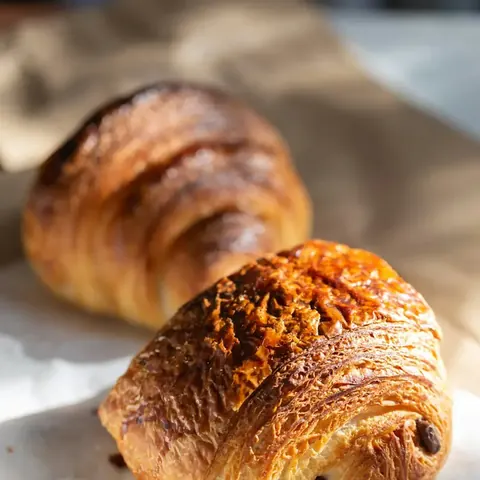
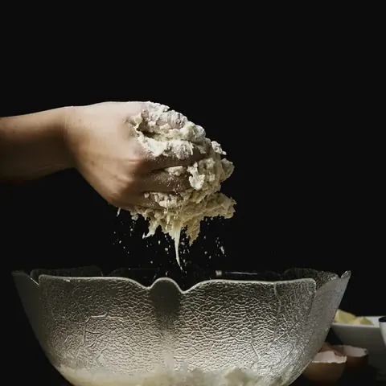
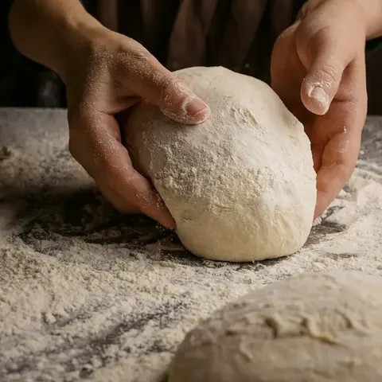
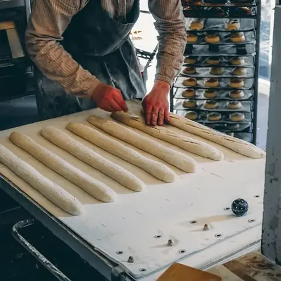
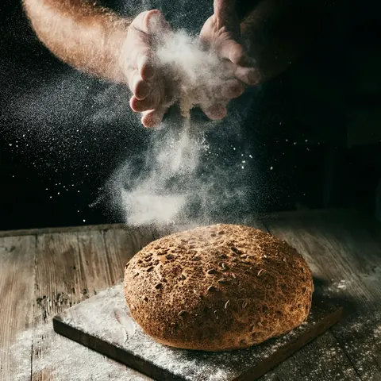
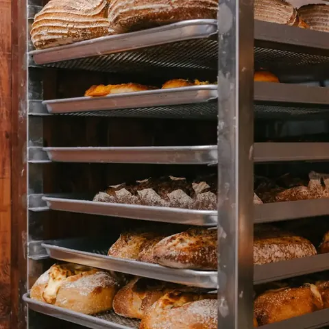
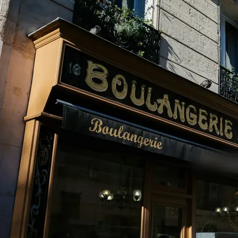

Delcourt Artisan boulanger à Étaples

Le pain sort du four à 6 h 45, 11 h 30 et 17 h. Antoine le prépare la nuit.
De 22 h à l’ouverture, Antoine est seul au fournil.
Faites défiler : l’horloge avance avec vous, du levain jusqu’à la première fournée.
-

22 h
Le levain
Antoine nourrit le levain avec de la farine de seigle et de l’eau tiède. Il a vingt ans, il est né dans ce fournil.
-

23 h 30
Le pétrissage
Farine d’un moulin à quarante kilomètres, eau, sel, levain. Le pétrin tourne lentement pour ne pas chauffer la pâte, qui repose ensuite jusqu’à 2 h.
-

2 h 30
Le façonnage
Quatre cents baguettes, roulées à la main une par une, puis couchées dans les plis d’une toile de lin.
-

4 h 15
Le coup de lame
Un voile de farine, puis cinq entailles sur chaque baguette. Dans le four, elles s’ouvriront en oreilles : c’est la grigne.
-
5 h
Au four
Un four à sole à 250 °C, vingt-deux minutes pour une baguette. Dehors, la rue sent déjà le pain.
-

5 h 45
Le défournement
Le pain chante en refroidissant : la croûte craque. On ne le met en sachet qu’une fois tiède.
-

6 h 45
On ouvre
Claire lève le rideau. Première fournée : baguettes, pains de campagne, croissants et pains au chocolat.
Le pain sort du four trois fois par jour.
Du lundi au samedi, sauf le mercredi.
- 6h45Baguettes, pains de campagne, croissants et pains au chocolat
- 11h30Tradition et ficelles, pour les sandwichs du midi
- 17h00Tradition, pain du soir et tarte au sucre encore tiède
Le dimanche, deux fournées : 7 h et 10 h.
Le pain du jour et toute la carteVotre pain, mis de côté à votre nom.
Choisissez, puis passez le prendre à la fournée qui vous arrange. Vous payez en boutique.
Sur la vitrine
-
Depuis le 15 oct.
Le pain aux noix est revenu
Noix entières et levain de seigle, jusqu’à la fin de l’hiver.
-
Avant le 20 déc.
Les bûches de Noël
Marron-vanille ou chocolat noir, six ou huit parts. À commander en ligne, par téléphone ou en boutique.
-
Dès le 2 janv.
Les galettes des rois
Frangipane au beurre, couronne offerte. Le 24 décembre, on ferme à 16 h ; fermé les 25 et 1er.
12 rue du Four-à-Pain, Étaples
Sur le chemin du port, à deux minutes à pied du parking du quai.
Appeler le 03 53 01 47 91Le plan Google ne se charge que si vous le demandez.
| Lundi | 6 h 45 – 19 h 30 |
|---|---|
| Mardi | 6 h 45 – 19 h 30 |
| Mercredi | Fermé |
| Jeudi | 6 h 45 – 19 h 30 |
| Vendredi | 6 h 45 – 19 h 30 |
| Samedi | 6 h 45 – 19 h |
| Dimanche | 7 h – 12 h 30 |